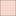

<!doctype html>
<html lang="en">
    <head>
        <meta charset="utf-8">
        <meta http-equiv="X-UA-Compatible" content="IE=edge">
        <meta name="viewport" content="initial-scale=1,user-scalable=no,maximum-scale=1,width=device-width">
        <meta name="mobile-web-app-capable" content="yes">
        <meta name="apple-mobile-web-app-capable" content="yes">
        <link rel="stylesheet" href="css/leaflet.css">
        <link rel="stylesheet" href="css/qgis2web.css"><link rel="stylesheet" href="css/fontawesome-all.min.css">
        <link rel="stylesheet" href="css/leaflet-search.css">
        <link rel="stylesheet" href="css/leaflet-measure.css">
        <style>
        html, body, #map {
            width: 100%;
            height: 100%;
            padding: 0;
            margin: 0;
        }
        </style>
        <title></title>
    </head>
    <body>
        <div id="map">
        </div>
        <script src="js/qgis2web_expressions.js"></script>
        <script src="js/leaflet.js"></script>
        <script src="js/leaflet.rotatedMarker.js"></script>
        <script src="js/leaflet.pattern.js"></script>
        <script src="js/leaflet-hash.js"></script>
        <script src="js/Autolinker.min.js"></script>
        <script src="js/rbush.min.js"></script>
        <script src="js/labelgun.min.js"></script>
        <script src="js/labels.js"></script>
        <script src="js/leaflet-measure.js"></script>
        <script src="js/leaflet-search.js"></script>
        <script src="data/grant_park_1.js"></script>
        <script src="data/20mi_buffer_2.js"></script>
        <script src="data/restaurants_3.js"></script>
        <script>
        var map = L.map('map', {
            zoomControl:true, maxZoom:28, minZoom:1
        }).fitBounds([[41.534894797686604,-87.99351579504997],[42.193346136714084,-87.19486188953755]]);
        var hash = new L.Hash(map);
        map.attributionControl.setPrefix('<a href="https://github.com/tomchadwin/qgis2web" target="_blank">qgis2web</a> &middot; <a href="https://leafletjs.com" title="A JS library for interactive maps">Leaflet</a> &middot; <a href="https://qgis.org">QGIS</a>');
        var autolinker = new Autolinker({truncate: {length: 30, location: 'smart'}});
        var measureControl = new L.Control.Measure({
            position: 'topleft',
            primaryLengthUnit: 'meters',
            secondaryLengthUnit: 'kilometers',
            primaryAreaUnit: 'sqmeters',
            secondaryAreaUnit: 'hectares'
        });
        measureControl.addTo(map);
        document.getElementsByClassName('leaflet-control-measure-toggle')[0]
        .innerHTML = '';
        document.getElementsByClassName('leaflet-control-measure-toggle')[0]
        .className += ' fas fa-ruler';
        var bounds_group = new L.featureGroup([]);
        function setBounds() {
        }
        map.createPane('pane_OpenStreetMap_0');
        map.getPane('pane_OpenStreetMap_0').style.zIndex = 400;
        var layer_OpenStreetMap_0 = L.tileLayer('https://tile.openstreetmap.org/{z}/{x}/{y}.png', {
            pane: 'pane_OpenStreetMap_0',
            opacity: 1.0,
            attribution: '',
            minZoom: 1,
            maxZoom: 28,
            minNativeZoom: 0,
            maxNativeZoom: 19
        });
        layer_OpenStreetMap_0;
        map.addLayer(layer_OpenStreetMap_0);
        function pop_grant_park_1(feature, layer) {
            var popupContent = '<table>\
                    <tr>\
                        <td colspan="2">' + (feature.properties['Park Name'] !== null ? autolinker.link(feature.properties['Park Name'].toLocaleString()) : '') + '</td>\
                    </tr>\
                    <tr>\
                        <td colspan="2">' + (feature.properties['Latitude'] !== null ? autolinker.link(feature.properties['Latitude'].toLocaleString()) : '') + '</td>\
                    </tr>\
                    <tr>\
                        <td colspan="2">' + (feature.properties['Longitude'] !== null ? autolinker.link(feature.properties['Longitude'].toLocaleString()) : '') + '</td>\
                    </tr>\
                </table>';
            layer.bindPopup(popupContent, {maxHeight: 400});
        }

        function style_grant_park_1_0() {
            return {
                pane: 'pane_grant_park_1',
                radius: 6.000000000000002,
                opacity: 1,
                color: 'rgba(35,35,35,1.0)',
                dashArray: '',
                lineCap: 'butt',
                lineJoin: 'miter',
                weight: 1,
                fill: true,
                fillOpacity: 1,
                fillColor: 'rgba(225,89,137,1.0)',
                interactive: true,
            }
        }
        map.createPane('pane_grant_park_1');
        map.getPane('pane_grant_park_1').style.zIndex = 401;
        map.getPane('pane_grant_park_1').style['mix-blend-mode'] = 'normal';
        var layer_grant_park_1 = new L.geoJson(json_grant_park_1, {
            attribution: '',
            interactive: true,
            dataVar: 'json_grant_park_1',
            layerName: 'layer_grant_park_1',
            pane: 'pane_grant_park_1',
            onEachFeature: pop_grant_park_1,
            pointToLayer: function (feature, latlng) {
                var context = {
                    feature: feature,
                    variables: {}
                };
                return L.circleMarker(latlng, style_grant_park_1_0(feature));
            },
        });
        bounds_group.addLayer(layer_grant_park_1);
        map.addLayer(layer_grant_park_1);
        function pop_20mi_buffer_2(feature, layer) {
            var popupContent = '<table>\
                    <tr>\
                        <td colspan="2">' + (feature.properties['Park Name'] !== null ? autolinker.link(feature.properties['Park Name'].toLocaleString()) : '') + '</td>\
                    </tr>\
                    <tr>\
                        <td colspan="2">' + (feature.properties['Latitude'] !== null ? autolinker.link(feature.properties['Latitude'].toLocaleString()) : '') + '</td>\
                    </tr>\
                    <tr>\
                        <td colspan="2">' + (feature.properties['Longitude'] !== null ? autolinker.link(feature.properties['Longitude'].toLocaleString()) : '') + '</td>\
                    </tr>\
                </table>';
            layer.bindPopup(popupContent, {maxHeight: 400});
        }

        function style_20mi_buffer_2_0() {
            return {
                pane: 'pane_20mi_buffer_2',
                opacity: 1,
                color: 'rgba(35,35,35,1.0)',
                dashArray: '',
                lineCap: 'butt',
                lineJoin: 'miter',
                weight: 1.0, 
                fill: true,
                fillOpacity: 1,
                fillColor: 'rgba(235,155,136,1.0)',
                interactive: true,
            }
        }
        map.createPane('pane_20mi_buffer_2');
        map.getPane('pane_20mi_buffer_2').style.zIndex = 402;
        map.getPane('pane_20mi_buffer_2').style['mix-blend-mode'] = 'normal';
        var layer_20mi_buffer_2 = new L.geoJson(json_20mi_buffer_2, {
            attribution: '',
            interactive: true,
            dataVar: 'json_20mi_buffer_2',
            layerName: 'layer_20mi_buffer_2',
            pane: 'pane_20mi_buffer_2',
            onEachFeature: pop_20mi_buffer_2,
            style: style_20mi_buffer_2_0,
        });
        bounds_group.addLayer(layer_20mi_buffer_2);
        map.addLayer(layer_20mi_buffer_2);
        function pop_restaurants_3(feature, layer) {
            var popupContent = '<table>\
                    <tr>\
                        <td colspan="2">' + (feature.properties['id'] !== null ? autolinker.link(feature.properties['id'].toLocaleString()) : '') + '</td>\
                    </tr>\
                    <tr>\
                        <td colspan="2">' + (feature.properties['dateAdded'] !== null ? autolinker.link(feature.properties['dateAdded'].toLocaleString()) : '') + '</td>\
                    </tr>\
                    <tr>\
                        <td colspan="2">' + (feature.properties['dateUpdated'] !== null ? autolinker.link(feature.properties['dateUpdated'].toLocaleString()) : '') + '</td>\
                    </tr>\
                    <tr>\
                        <td colspan="2">' + (feature.properties['address'] !== null ? autolinker.link(feature.properties['address'].toLocaleString()) : '') + '</td>\
                    </tr>\
                    <tr>\
                        <td colspan="2">' + (feature.properties['categories'] !== null ? autolinker.link(feature.properties['categories'].toLocaleString()) : '') + '</td>\
                    </tr>\
                    <tr>\
                        <td colspan="2">' + (feature.properties['city'] !== null ? autolinker.link(feature.properties['city'].toLocaleString()) : '') + '</td>\
                    </tr>\
                    <tr>\
                        <td colspan="2">' + (feature.properties['country'] !== null ? autolinker.link(feature.properties['country'].toLocaleString()) : '') + '</td>\
                    </tr>\
                    <tr>\
                        <td colspan="2">' + (feature.properties['keys'] !== null ? autolinker.link(feature.properties['keys'].toLocaleString()) : '') + '</td>\
                    </tr>\
                    <tr>\
                        <td colspan="2">' + (feature.properties['latitude'] !== null ? autolinker.link(feature.properties['latitude'].toLocaleString()) : '') + '</td>\
                    </tr>\
                    <tr>\
                        <td colspan="2">' + (feature.properties['longitude'] !== null ? autolinker.link(feature.properties['longitude'].toLocaleString()) : '') + '</td>\
                    </tr>\
                    <tr>\
                        <td colspan="2">' + (feature.properties['name'] !== null ? autolinker.link(feature.properties['name'].toLocaleString()) : '') + '</td>\
                    </tr>\
                    <tr>\
                        <td colspan="2">' + (feature.properties['postalCode'] !== null ? autolinker.link(feature.properties['postalCode'].toLocaleString()) : '') + '</td>\
                    </tr>\
                    <tr>\
                        <td colspan="2">' + (feature.properties['province'] !== null ? autolinker.link(feature.properties['province'].toLocaleString()) : '') + '</td>\
                    </tr>\
                    <tr>\
                        <td colspan="2">' + (feature.properties['sourceURLs'] !== null ? autolinker.link(feature.properties['sourceURLs'].toLocaleString()) : '') + '</td>\
                    </tr>\
                    <tr>\
                        <td colspan="2">' + (feature.properties['websites'] !== null ? autolinker.link(feature.properties['websites'].toLocaleString()) : '') + '</td>\
                    </tr>\
                    <tr>\
                        <td colspan="2">' + (feature.properties['Park Name'] !== null ? autolinker.link(feature.properties['Park Name'].toLocaleString()) : '') + '</td>\
                    </tr>\
                    <tr>\
                        <td colspan="2">' + (feature.properties['Latitude_2'] !== null ? autolinker.link(feature.properties['Latitude_2'].toLocaleString()) : '') + '</td>\
                    </tr>\
                    <tr>\
                        <td colspan="2">' + (feature.properties['Longitude_2'] !== null ? autolinker.link(feature.properties['Longitude_2'].toLocaleString()) : '') + '</td>\
                    </tr>\
                </table>';
            layer.bindPopup(popupContent, {maxHeight: 400});
        }

        function style_restaurants_3_0() {
            return {
                pane: 'pane_restaurants_3',
                radius: 4.399999999999998,
                opacity: 1,
                color: 'rgba(35,35,35,1.0)',
                dashArray: '',
                lineCap: 'butt',
                lineJoin: 'miter',
                weight: 1,
                fill: true,
                fillOpacity: 1,
                fillColor: 'rgba(53,121,177,1.0)',
                interactive: true,
            }
        }
        map.createPane('pane_restaurants_3');
        map.getPane('pane_restaurants_3').style.zIndex = 403;
        map.getPane('pane_restaurants_3').style['mix-blend-mode'] = 'normal';
        var layer_restaurants_3 = new L.geoJson(json_restaurants_3, {
            attribution: '',
            interactive: true,
            dataVar: 'json_restaurants_3',
            layerName: 'layer_restaurants_3',
            pane: 'pane_restaurants_3',
            onEachFeature: pop_restaurants_3,
            pointToLayer: function (feature, latlng) {
                var context = {
                    feature: feature,
                    variables: {}
                };
                return L.circleMarker(latlng, style_restaurants_3_0(feature));
            },
        });
        bounds_group.addLayer(layer_restaurants_3);
        map.addLayer(layer_restaurants_3);
        var baseMaps = {};
        L.control.layers(baseMaps,{' restaurants': layer_restaurants_3,' 20mi_buffer': layer_20mi_buffer_2,' grant_park': layer_grant_park_1,"OpenStreetMap": layer_OpenStreetMap_0,},{collapsed:false}).addTo(map);
        setBounds();
        map.addControl(new L.Control.Search({
            layer: layer_grant_park_1,
            initial: false,
            hideMarkerOnCollapse: true,
            propertyName: 'Park Name'}));
        document.getElementsByClassName('search-button')[0].className +=
         ' fa fa-binoculars';
        </script>
    </body>
</html>
